Design & Manufacturing Documentation
Hand sketches, dimensioned drawings, and labeled CAD renders spanning the full design — mechanism layout, blade grid, return system, and basket geometry.


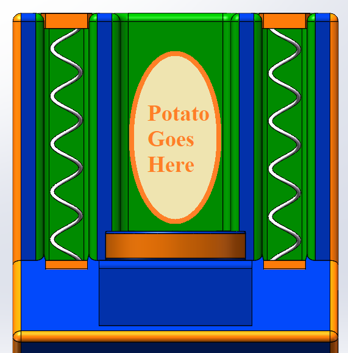
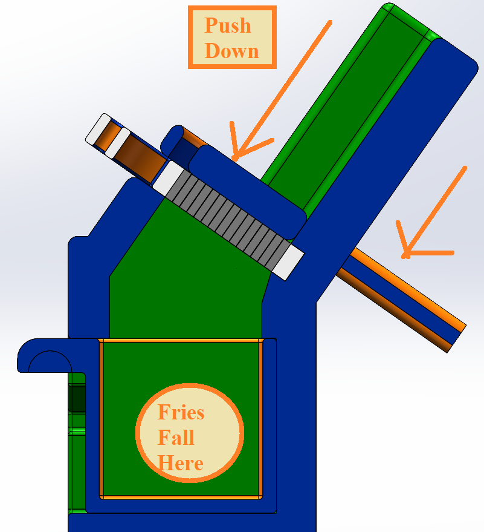
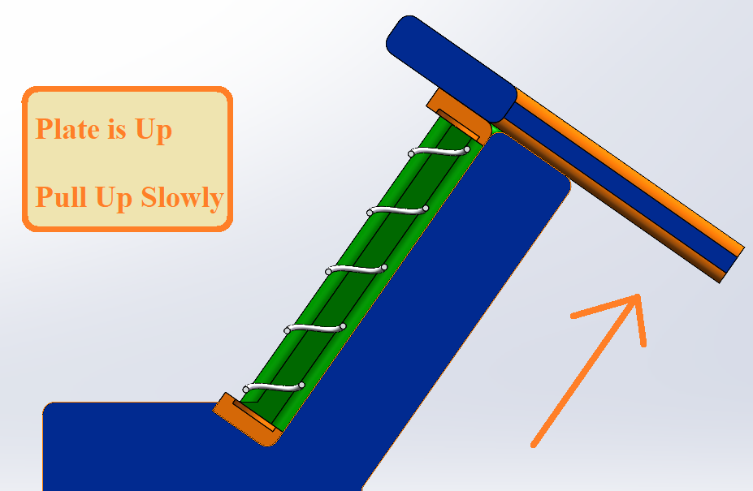
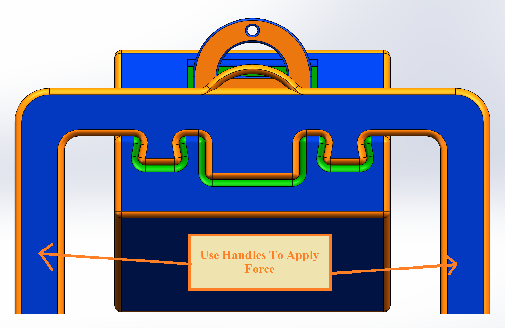
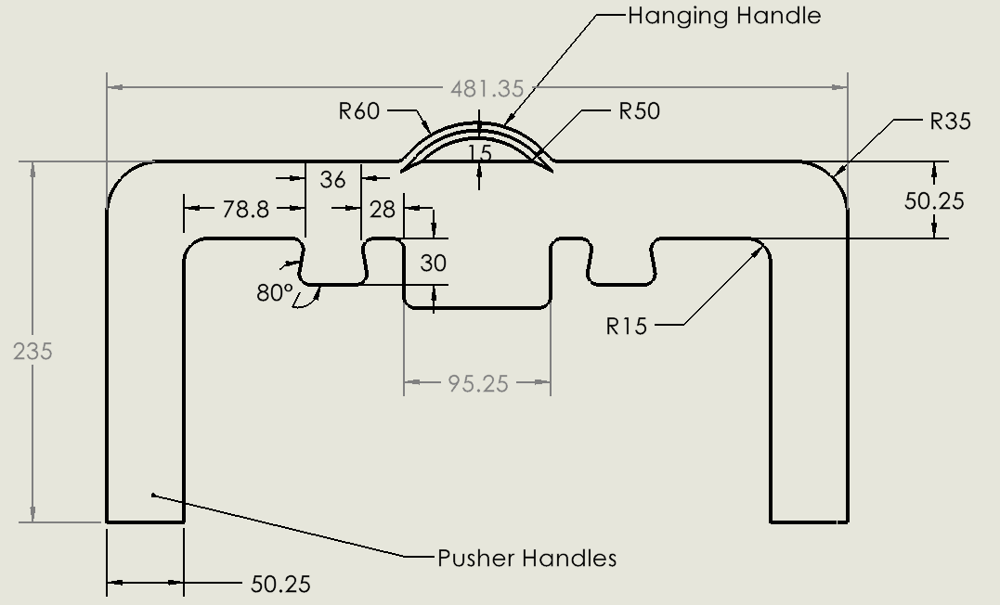
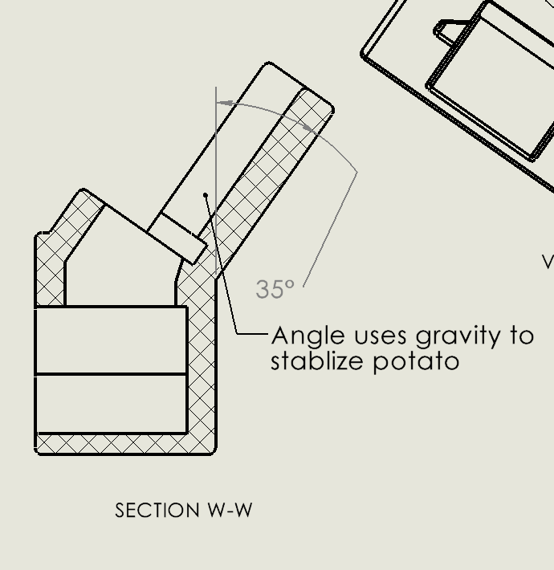
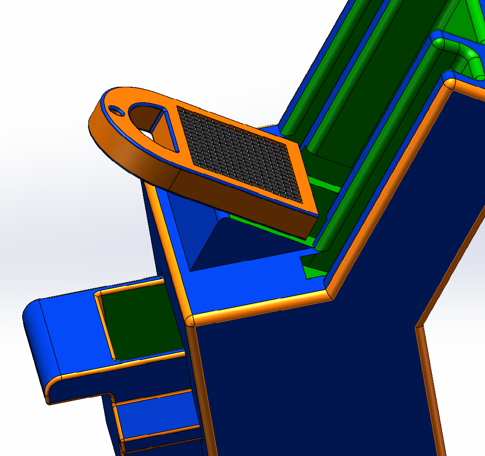
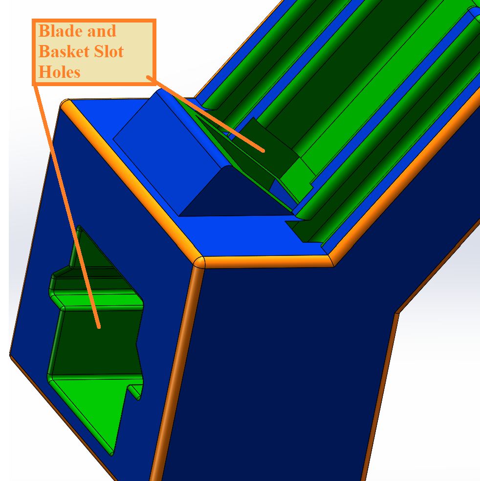
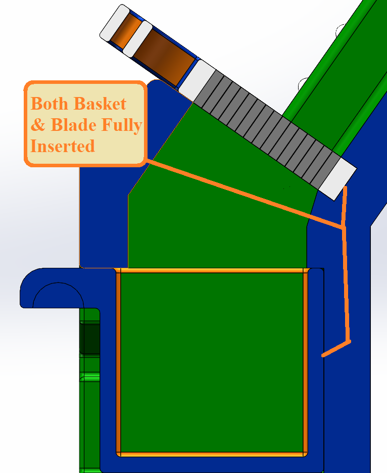
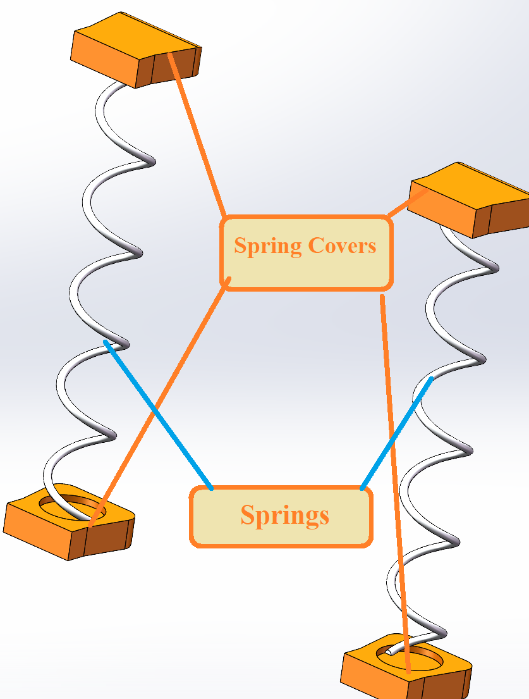
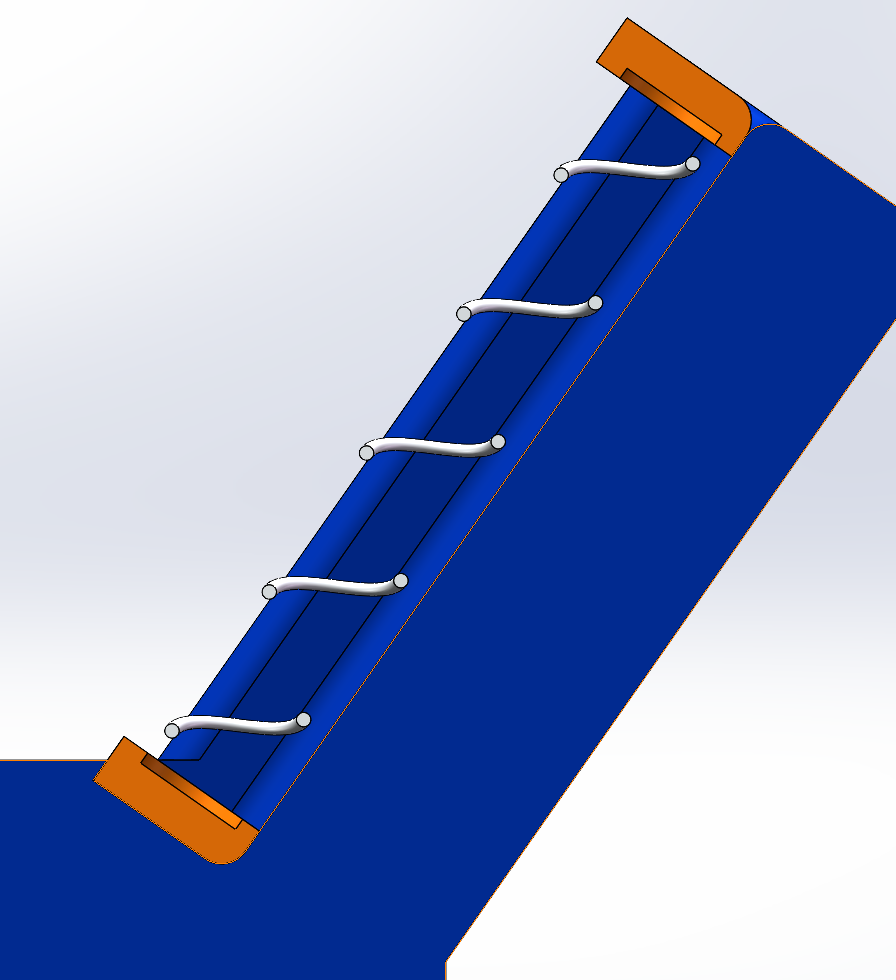
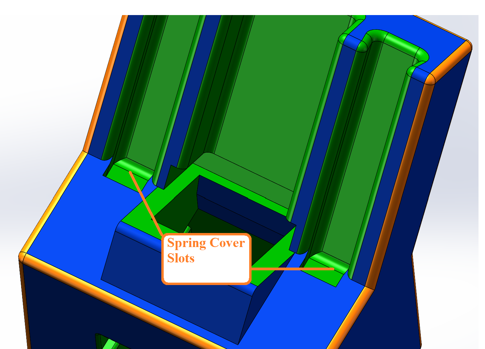
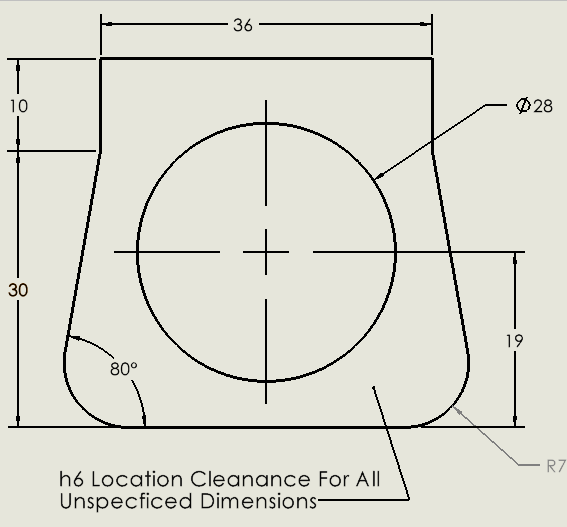
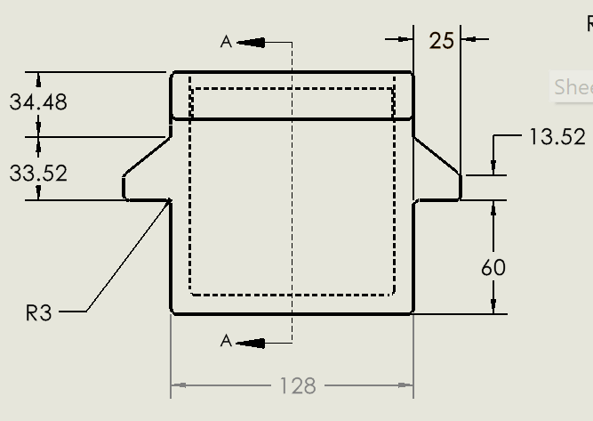
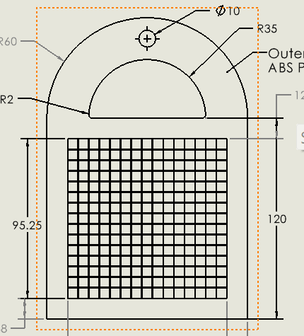